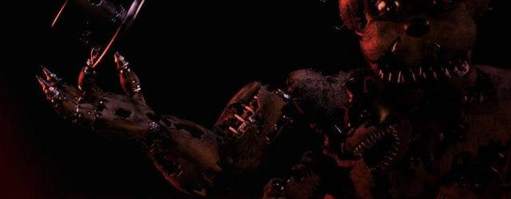
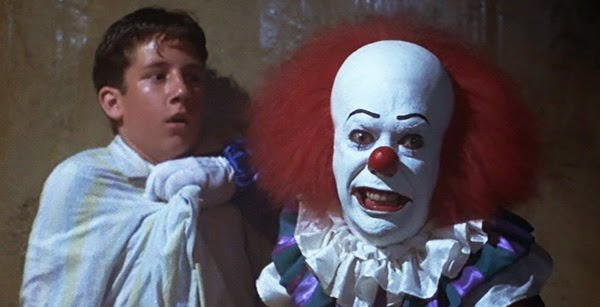

FIVE NIGHTS AT FREDDY´S 4
El muchacho Scott Catwhon, creador de Five Nights at Freddy's, ha anunciado la cuarta entrega de la saga con una imagen en su página web. De acuerdo con ésta, Five Nights at Freddy's 4 llegará en Halloween (es decir, alrededor del 31 de octubre), y será el capítulo final, por lo que se espera que cierre la tetralogía, A pesar de que la imagen está algo oscura, junto a Freddy Fazbear, es posible ver el mensaje que indica el lanzamiento del juego en unos meses. La anterior entrega, Five Nights at Freddy's 3, se lanzó el pasado mes de marzo, y ya se especuló que podría ser la última, por lo que sus aficionados se alegrarán de saber que todavía queda, al menos, un capítulo más.

'IT' se empezará a rodar en junio
La adaptación cinematográfica de la novela de Stephen King, IT, finalmente ya está en pre-producción con planes a iniciar su rodaje este junio en Nueva York, según informa Production Weekly.
La primera entrega de lo que podría ser una trilogía, estará dirigida por Cary Fukunaga.
Uno de los retrasos del inicio del rodaje ha sido la elección del Pennywise perfecto, el payaso asesino de la novela y la TV Movie de 1990.
La TV Movie de 1990 basada en la novela de Stephen King que estuvo protagonizada por Tim Curry dando vida a Pennywise, nos lleva a 1960 donde siete niños marginados conocidos como 'El club de Los Perdedores' luchan contra un demonio que tiene forma de payaso que mata niños. 30 años más tarde, los amigos se volverán a reunir para luchar de nuevo con el payaso asesino...
Seth Grahame-Smith, David Kajganich y Chase Palmer han escrito el guión para la Warner.
Footer
.jpg)
Leer más...
No hay mucho para ahondar en este tema, los eventos dentro del Vega Ring como dije, pueden ser un poco más fáciles para acceder que otros organizados por otras personas, pero he de decirlo para ser manejado todo dentro de la Deep Web llevan un control bastante exacto tanto para la difusión como para el evento en sí, según lo poco que pude ver de ese vídeo con el fragmento de streaming se lleva a cabo en una especie de arena bastante cerrada para quien esté dentro, los contendientes se veían bastante negados a participar sin embargo después de un rato comenzaba la pelea, y como dije la cuestión es sencilla, ninguno sale de ahí hasta matar a su contrincante.
Footer
Redes Sociales
Facebook
Youtube
Footer